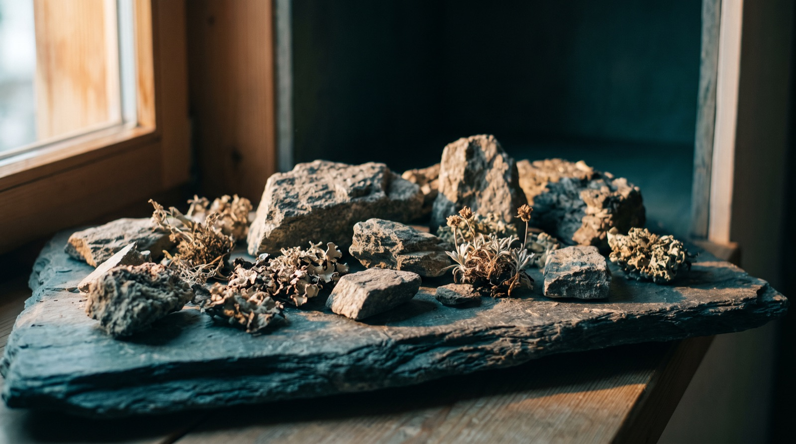
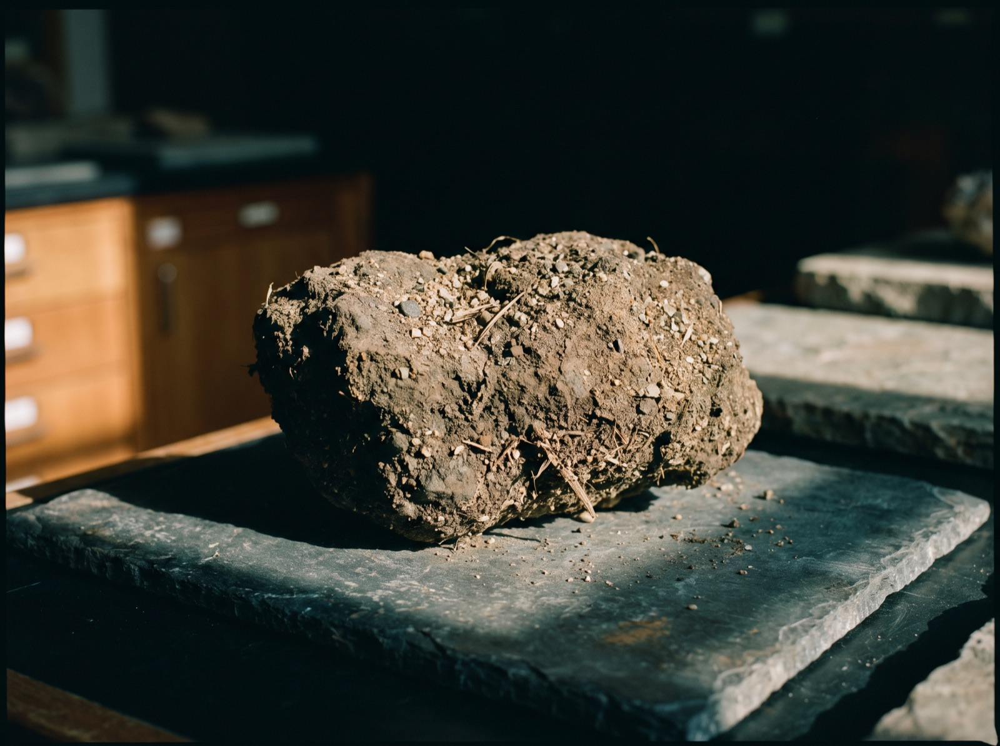
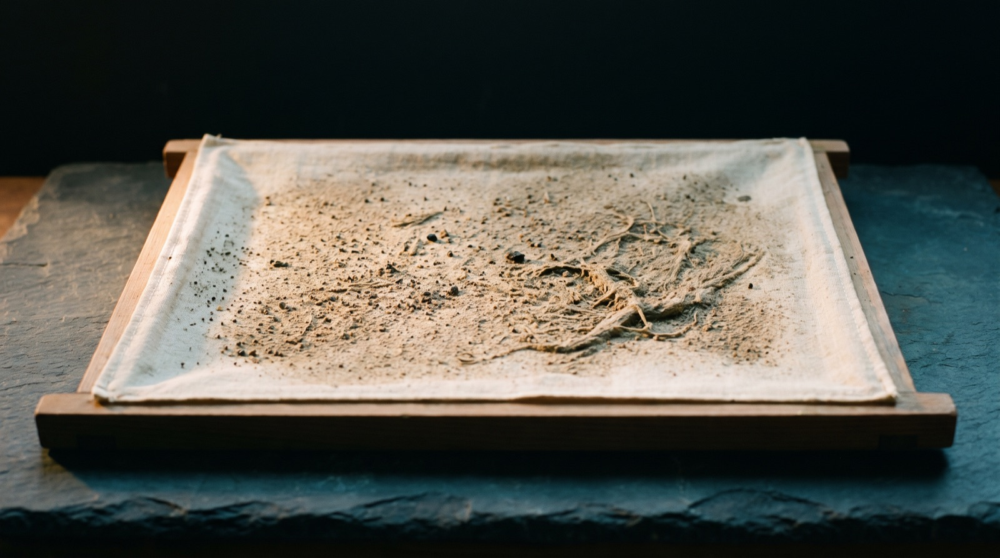
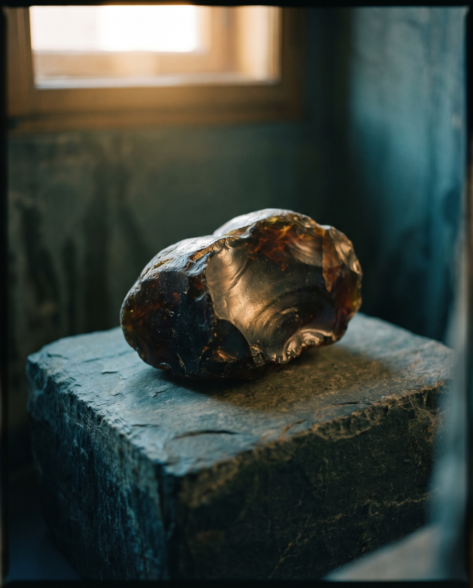
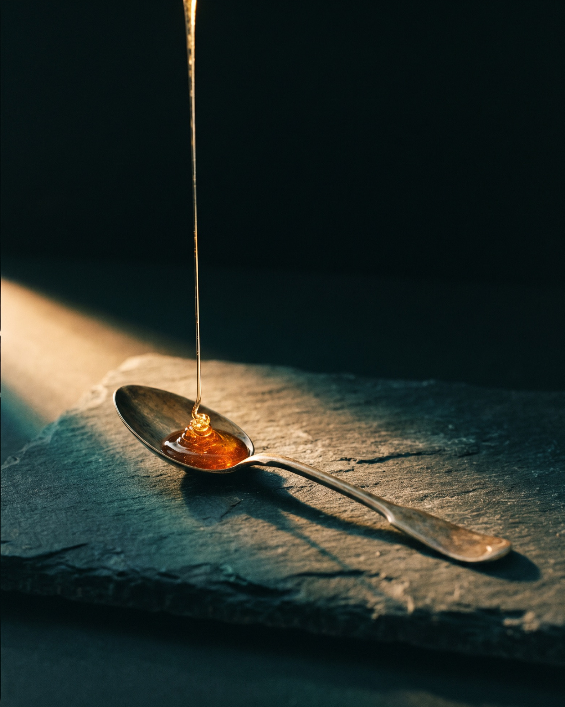

Shilajit · Ingredient notes
Shilajit. How to tell resin from tar.
Most of the shilajit sold online is cut with something, and some of it was never shilajit at all. The material has a set of physical habits that are difficult and expensive to imitate, so you can check a jar yourcellf with a glass, a kettle and a fridge. Here is the whole method, in the order we would run it.
By Reiss Davies Ausar8 September 202611 minute read

A man came into the shop on Saturday with a small black jar in his coat pocket. He had paid about twenty pounds for it on a marketplace, he had been taking it for a month, and he wanted somebody to tell him whether it was real. I put the kettle on. By the time the water had gone off the boil the two of us were stood over a glass and we both already knew, and it was not the answer he had walked in hoping for.
We get asked this more than anything else on the shelf. Shilajit is cheap to fake and expensive to make properly, and any material where those two things are true will grow a market full of the fake version, every time, without anybody having to plan it. Some of what is sold under the name is not shilajit at all. Far more of it is real material cut with something that cost the seller almost nothing.
The useful part, and the reason this page is worth your ten minutes, is that the true material behaves in ways that are genuinely hard to copy. Every test below works at a kitchen table with things you already own.
01What shilajit actually is
Shilajit is not a plant and it is not an animal. It is a dark, tarry, mineral-bearing material that seeps out of cracks in rock faces at altitude, and it is the only thing on our shelf that comes off a mountain rather than out of soil or water. It comes from the Altai, on the borders of Russia, Kazakhstan, Mongolia and China, and from the Himalaya, the Karakoram and the Caucasus. Ours is Altai.
The formation takes a very long time, and that is the whole of its character. Alpine plants, mosses and lichens grow in the thin soil that gathers in a crevice, die back where they stand, and get pressed down into the crack by everything that grows after them. It is cold up there and there is little oxygen down in the fissure, so across an unhurried stretch of time that plant matter is compressed and broken down and takes up the minerals of the rock holding it. Plants go in. Mountain comes out. If you consider the archetype of mountains, this is Capricorn in resin form.

In summer the sun warms the face, the mass softens, and it works its way back out through the crack, where somebody scrapes it off the rock. It comes out in the same places year after year, so collecting it is local knowledge passed down rather than prospecting, and the people who know those faces are the reason any of it reaches a shop in Liverpool.
A good piece of finished resin is near black with a bronze cast where the light catches it, and a fresh break shows a smooth glassy face rather than a crumbly one. What matters far more than which range it came off is what happened to it after it left the rock.
It is scraped off a rock face by somebody who climbed up to it. Everything after that is filtration.
02How it is purified, and where the quality is won
Raw shilajit comes off the rock carrying everything else that was on the rock with it: grit, sand, rock dust, plant fibre, insect parts. In that state it is not a food, whatever anybody tells you, and a seller offering a lump of it as raw or wild scraped is selling an unfinished ingredient with a romantic word in front of it.

Purification is simple in principle and it is water that does the work. The material is dissolved in warm water over several hours, until the soluble part is in solution and the insoluble part plainly is not. That mixture is filtered, then filtered again, through finer and finer cloth, and everything each filter catches is thrown away. The liquid is dried back down at low temperature into a resin.
Filtration is where the quality is decided, because it is the one step in the whole chain that costs the producer yield. Every pass takes out more grit and takes more saleable weight away with it. A producer who filters once through muslin keeps a great deal more of what he started with than one who filters five times, he sells that extra weight at the same price a gram, and on a phone screen the two jars are identical. That is the entire economics of this material in three sentences.

You can feel the difference with your hands, which is the part nobody tells you. Rub a smear the size of a match head between thumb and forefinger. Properly filtered resin is smooth and slightly tacky and draws out into a thread before it breaks. A poorly filtered one grates, a fine sand catching on the fingertip, and that sand is rock. It is the commonest single thing wrong with a cheap jar.
03Six tests you can run at home
Run these in order. The first two decide it and the other four confirm it. You need a clear glass, water off the boil, a fridge and a pea-sized piece of the resin. Work in daylight, because half of this is colour and a kitchen bulb will lie to you.
-
The water test. Drop the piece into about 200 ml of warm water and stir slowly. Not boiling, and not milk or tea, because both hide what you are looking for.
True resin: it comes off almost at once, in ribbons of brown, and two or three minutes of gentle stirring takes it entirely. The solution is clear golden brown at the edges and near black in the body of the glass, nothing on the bottom, no film on top.
Cut or fake: a piece still sulking on the bottom after five minutes, a cloudy grey solution instead of a clear brown one, an oily bloom on the surface, or clumps that will not break up. Maltodextrin and molasses dissolve readily enough, but the water goes flat and opaque, more gravy than tea held to the light.
-
The temperature test. Put the jar in the fridge for half an hour, then try to bend a small piece. Warm that same piece in a closed hand and try again.
True resin: cold, it is hard and brittle. Press it and it resists, press harder and it snaps rather than squashing, and tapped with a spoon handle it sounds like a stone. Warm, it goes soft within a minute and pulls into a long thread that thins before it parts.
Cut or fake: it behaves the same at both temperatures. The binder most fakes are built on has no equivalent transition, so cold it is a workable putty and warm it is a greasier one. A wax-based one softens but smears instead of threading. Identical out of the fridge and out of your fist is enough for me.
-
Flame behaviour. The theatrical one, and I would not decide anything on it alone. A very small piece on a metal skewer, a few seconds in a flame, by an open window.
True resin: it does not want to burn. It bubbles, swells, blackens and gives off a thin acrid smoke, and it stops as soon as it leaves the flame. What is left is a little ash.
Cut or fake: sugar, syrup or wax flares, holds its own flame out of the heat, drips, and smells of burnt caramel or a blown-out candle. Sweetness has no business in this material.
-
The smell. Open the jar cold, warm a scrape on the back of your hand and put your nose to it.
True resin: bitter, smoky and mineral. Wet stone, woodsmoke, old leather, a little tar, something faintly animal underneath. It is not a strong smell across a room. It is one you have to go and find.
Cut or fake: sweet. Molasses, treacle, instant coffee, liquorice. Or nothing at all, which means a great deal of filler and very little material.
-
The taste. Taste the solution from the first test rather than the raw resin.
True resin: strongly bitter, smoky, faintly metallic, and it lingers at the back of the throat after you have swallowed. No sweetness anywhere in it. It never becomes pleasant, only ordinary.
Cut or fake: sweet, caramel, or flat and gritty on the teeth. Grit is rock dust and you should STOP drinking it. Sweetness means something was added, because nothing that seeps out of a rock face over that length of time tastes of toffee.
-
The sediment test. Leave the glass from the first test standing for an hour, then look at the bottom through the side of the glass.
True resin: uniform top to bottom, at most a faint haze of fine particles that lift and disperse when you tip the glass.
Cut or fake: a distinct layer on the bottom that slides in one piece like silt in a puddle. That layer is what the producer did not filter out, and it is the difference between five filters and a tea towel.
04What a good label prints, and what most do not
Before you buy a jar, the label is the whole of what you have. This is what we look for on it.
- The range, named. Altai, Karakoram, Gilgit. A specific range in a specific country. Himalayan on its own covers five countries and commits to nothing, and a seller who actually knows where his material came off tends to want to tell you.
- Resin or extract. Different products at different prices, and the label should not make you guess. Powder, extract or a ratio such as 20:1 means it is not resin.
- A heavy metals statement attached to a batch. Lead, arsenic, mercury and cadmium, with a batch number and a date. A line saying lab tested with no document behind it is a sentence, not a test.
That last one we do not compromise on. This material is scraped off rock, it has spent a very long time pressed against mineral seams, and it takes up whatever is sat around it, which in some places includes lead and arsenic. Adulteration has its own separate history of walking metals in through the back door as well. That is a purity and safety question rather than anything about what the product does, and safety information is never a claim, which is why I can write about it at whatever length it deserves. Publish more of this, not less.
Most labels print none of it. Ours prints the Altai, the weight, the price and the words dual extracted and lab tested. It does not print a fulvic acid percentage and it does not name a batch certificate, so by the standard I have just set out our own label is short of two things. I would rather write that sentence than print a number I cannot put a document behind. Ask me what testing sits behind the jar on our shelf and you get told exactly what we have.

05Resin, powder, capsule, gummy
The same material is sold in four forms, and something real is given up at every step away from the first one.
| Resin | The purified material itself, nothing added and nothing carrying it. You can run all six tests on it. Sticky, awkward to judge by eye, and the only form you can check. |
|---|---|
| Powder | Resin dried onto a carrier, usually maltodextrin, rice flour or gum arabic, then milled. The carrier can be most of the weight and the label rarely says how much. The tests stop working, because the water is now telling you about the carrier. |
| Capsules | That powder inside a shell. The smell and the taste go as well, and you pay for the shell and the filler. Unverifiable at home. |
| Gummies | Sugar or a sugar substitute, pectin or gelatin, flavouring and colouring, with a small quantity of extract. The flavouring is there to cover the bitterness, and the bitterness was your best check. |
Every step down that table makes the product easier to take and harder to check, and it is worth sitting with the fact that those are one step and not two. Buy the resin. You can put it in a glass of warm water and sea exactly what you have.
06What is in it, and what I am allowed to say about that
The listing for our jar names zinc, copper, nickel, manganese, potassium, phosphorus, vanadium, chromium, cobalt, magnesium, carbon, humic acid and fulvic acid. Those are compositional facts about a material and we will print every one of them. What we will not do, on this page or any other, is tell you what any of them does once it is inside you.
Fulvic acid is the compound everybody names and almost nobody defines. It belongs to the humic substances, a family of dark complex organic acids that form as plant material breaks down over long periods, which is exactly the process section one described happening inside a crack in a mountain. The fulvic fraction is the smaller and more soluble one, soluble right across the pH range, strongly coloured, and part of the reason a true resin gives you a golden brown solution instead of a grey one. I stop there, and I stop there deliberately, because the next sentence in every other article about fulvic acid is a health claim.
We sell food supplements in England. The only health claims we may make are the ones on the Great Britain register, they attach to a named nutrient rather than to a plant or a mineral deposit off a mountain, and the product has to hold enough of that nutrient to qualify. Every botanical claim is on hold. Presenting a product as though it treats or prevents anything makes it a medicine in law, and nobody has to test a thing for that to bite. So the number of things I am allowed to tell you shilajit does is zero. That is the answer. It is not a technicality I am working my way around on the way to a better one.
Every shilajit advert online says otherwise, and the reasons for that are dull rather than sinister. Most sellers are overseas, enforcement here is complaint led and slow, and copy gets rewritten by people whose only research was the last seller's page. Our own live listing does the same thing, which is worse than any of them doing it, because we know better. It is being rewritten, and this article is part of the rewriting.
07How it is taken
The dose exactly as our listing prints it. A pea-sized portion of resin, stirred into 300 to 500 ml of warm spring water until it has fully dissolved, once daily in the morning, or morning and evening. The jar is 50 g and the listing calls that roughly a two month supply, which works out at a little under a gram a day at the once daily rate.
Getting it off the spoon is the practical problem and everybody has the same fight with it in the first week. Run the spoon under the hot tap and dry it before you go into the jar, or dip the loaded spoon straight into the warm water and stir, and it will let go inside a few seconds. Never a wet spoon back into the jar. It does not need refrigerating either: a cupboard is right, and cold only makes it harder to get out again.
Warm water, not boiling. Milk, tea and coffee all work and every one of them hides the sediment, so keep to plain water for the first few days of a new jar and give yourself somewhere to look. The taste is strongly bitter and smoky with a mineral edge to it and it sits at the back of the throat afterwards. Honey or lemon will soften that, although honey is covering the exact taste you would have used to check the next jar.

08Who should not take it
This is the part I would rather you read than any of the rest of it, and I would sooner lose the sale than get it wrong.
- Pregnant or nursing. No. There is no adequate safety information for pregnancy or breastfeeding for this material, and where the information is not there, the answer is no.
- Anyone on prescribed medication. Speak to your GP or your pharmacist first, and take a photograph of the label with you. That applies to any prescription rather than a particular list, because a mineral-bearing material is not one defined compound and your prescriber should be the one to look at it.
- Anyone with a condition affecting iron levels, or who takes an iron supplement. Speak to your GP first. The material is iron bearing, which is a fact about its composition rather than a claim about what it does, and it belongs in front of anybody already counting iron. I will not offer a mechanism, because I do not have one.
- Children. No, and keep the jar somewhere they cannot reach it. It looks like something interesting.
- Anyone who cannot see a source range, a batch and a heavy metals statement. Whoever is selling it, and however well it does on the six tests. They find grit and filler. They do not find lead.
- Anyone holding raw or wild scraped material. That is an unfinished ingredient with rock still through it. It is not food yet.
None of this is medical advice and I am not qualified to give any. It is the set of questions I ask across the counter before a jar goes into anybody's bag.
This article is general information about a food, written by the person who sells it. It is not medical advice and it makes no claim that any product will treat, cure or prevent any condition.
09The jar on my shelf
Altai resin, 50 g in an amber glass jar, £39.99, and every one of the six tests in this article works on it. That is the point of printing them.
Shilajit Resin
£39.99Altai resin, dual extracted. 50 g in an amber glass jar, which the listing calls roughly a two month supply at a pea-sized portion once daily.
See the jarIf you already own a jar from somewhere else, bring it into the shop on Smithdown Road, Tuesday to Sunday, and we will put the kettle on and run the six tests on it together. If yours turns out to be good, I will tell you so and you can keep your money and go home.

Reiss Davies Ausar
Founder and formulator at Herbase. Trading online since 2019 and behind the counter at 599 Smithdown Road, Liverpool, since August 2024. Author of three books on herbal practice. Book an hour with him if you want to go into more detail.